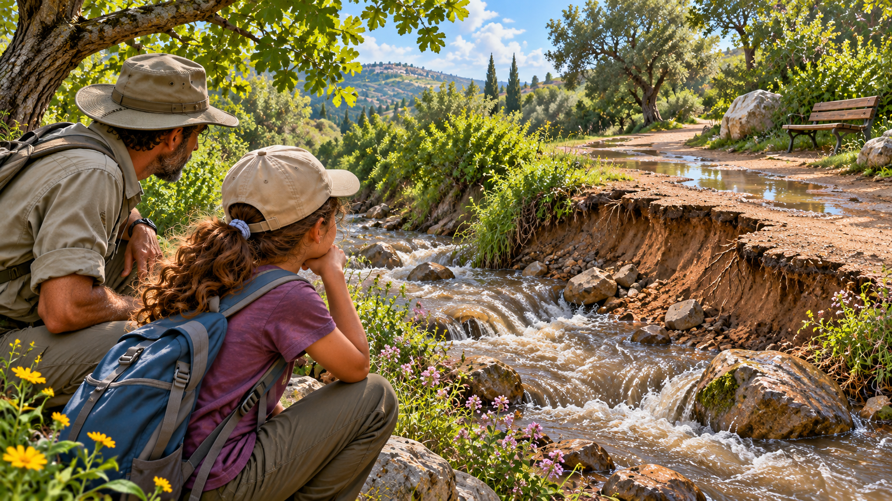

التصوير عن بُعد
تغيّرات في الطبيعة
أمس كان هنا ممرّ. ماذا تغيّر؟

المقعد الذي اختفى
«أين المقعد؟» سألت إيلا البالغة عشر سنوات. وقفت مع أبيها عند نقطة المراقبة المألوفة قرب الوادي. في الجولة السابقة صوّرا من هناك شجرة صفصاف، وانحناءة في الماء ومقعدًا خشبيًّا بجانب الممرّ. الآن، بعد عدّة أيّام من المطر القويّ، رأت جذعًا داكنًا ونباتات مغطّاة بالطين فقط.
ربّما نُقل المقعد، أو ربّما هو مخفيّ، أو ربّما غيّرت المياه مظهر المكان. فتحت إيلا الصورة القديمة في الهاتف. بدا «قبل» و«بعد» كأنّهما صُوّرا في واديين مختلفين.
أُغلق الممرّ
عند مدخل جزء الممرّ وُضع حاجز. أوضح حارس وقف بجانبه أنّ الأرض ما زالت تُفحص وأنّ الدخول ممنوع، حتّى من أجل التصوير عن قرب. خاب أمل إيلا: من دون الاقتراب، كيف ستكتشف ما تغيّر؟
حين نظرت إلى الضفّة البعيدة لاحظت أنّ المياه لا تصل الآن إلى الخطّ الذي تعرفه. لكنّها تذكّرت أنّ مستوى المياه قبل شهر أيضًا كان يتغيّر من يوم إلى يوم. هل يرتبط التغيّر بالمطر الأخير، أو بالساعة التي صوّرت فيها، أو بشيء بقي في المكان؟
صورتان لا تتوافقان
ألصقت إيلا الصورتين على الشاشة. في إحداهما وقفت الشجرة تقريبًا في الوسط، وفي الأخرى كانت عند الحافّة. التُقطت صورة في الظهيرة والأخرى قرب الغروب. بدا ظلّ كبير غطّى الضفّة في الصورة الجديدة وكأنّه بقعة ماء.
«إذا صوّرت مرّة أخرى من المكان نفسه تمامًا فسيكون أسهل للمقارنة»، فكّرت. ثم تذكّرت أنّ المكان المألوف بجانب الممرّ مغلق. فهمت أنّ صورتين واضحتين ليستا بالضرورة زوجًا يمكن مقارنته من دون معرفة كيف ومتى التُقطتا.
الحارس يبحث عن علامات
روى الحارس أنّ فريق الصيانة يحتاج إلى التحقّق إن تغيّر شكل الضفّة، وإن نشأت عوائق وأين تلزم فحص مهنيّ. «يبدو مختلفًا» لا يكفي لاتّخاذ قرار: المهمّ معرفة ماذا تغيّر، وأين وإلى أيّ مدى.
بدأت إيلا تسجّل ما تستطيع قوله بيقين: «الممرّ مغلق»، «هناك طين قرب الشجرة»، «المقعد غير ظاهر من نقطة المراقبة». وبجانب جملة «جرف المطر المقعد» أضافت علامة استفهام. فهي لم ترَ حقًّا ما حدث له.
التغيّر الذي لا يتوقّف
بعد أسبوع عادت إيلا مع أبيها إلى نقطة المراقبة المسموح بها. كانت المياه أخفّ، وتبيّن أنّ البقعة الداكنة على الضفّة كانت ظلًّا من الأغصان جزئيًّا. أمّا كومة رمل صغيرة لم تظهر في الصور السابقة فما زالت هناك.
تفاجأت إيلا: اختفى بعض الاختلافات خلال أيّام، وبقي بعضها. صورة من يوم واحد قد تُظهر ما بدا حينها، لكنّها لا تفسّر دائمًا إن كان التغيّر لحظيًّا أو مستمرًّا.
ماذا يمكن معرفته من بعيد؟
لدى إيلا صور من تواريخ مختلفة، ووصف لنقطة المراقبة وشرح عن المنطقة المغلقة. ينقصها معلومات من الأماكن التي تحجبها الأشجار، وتوثيق لمستوى المياه على امتداد الأيّام، وطريقة منظّمة للتمييز بين الظلّ والرطوبة وتغيّر شكل الأرض.
يذكّر الحارس أنّ قرار إن كان الممرّ آمنًا يخصّ المختصّين. لكن إيلا تعرف الآن أنّ هناك سؤالًا يمكن للتلاميذ بحثه: كيف نقارن مظاهر المكان نفسه على امتداد الزمن من دون افتراض أنّ كلّ اختلاف في الصورة هو تغيّر في الميدان؟
قبل أن نبتكر
ترتب إيلا الصور حسب التاريخ. تحت الأولى تكتب «ماذا نرى»، وتحت الثانية «ماذا ربّما حدث». السطران ليسا متماثلين. بدا لها ذلك مرّة أمرًا زائدًا؛ والآن تحديدًا يثيرها الفرق بينهما.
كيف يمكن توثيق المنطقة نفسها بحيث تكون المقارنة موثوقة؟ وأيّ تفاصيل عن المكان والزمان وظروف التصوير ينبغي حفظها؟ وماذا تفعلون حين لا يُرى جزء من المساحة، من دون دخول مكان مغلق أو خطر؟
تلميح من عالم الفضاء
تصوّر الأقمار الصناعيّة مناطق على الأرض في أوقات مختلفة، ويمكن لمقارنة الرصد أن تشير إلى تغيّرات بعد مطر أو فيضان. لكن الغيوم والظلال وموقع التصوير وزمنه تؤثّر فيما يبدو. كيف نميّز بين تغيّر في الميدان وبين اختلاف في طريقة الرصد؟
بعد القراءة — في ورقة الفريق
تحدّثوا في الفريق وأجيبوا استنادًا إلى معلومات القصّة. إذا نقصت معلومة، اكتبوا سؤالًا للمتابعة.
- من تريدون مساعدته في القصّة؟
- ماذا يحاول أن يفعل وما الذي يصعّب عليه ذلك؟
- ما الذي يحتاج إلى أن يكون قادرًا على فعله؟
- ما الذي تريدون معرفته أيضًا قبل تطوير الأفكار؟